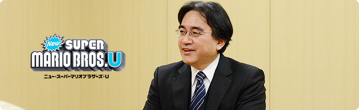
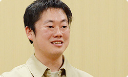
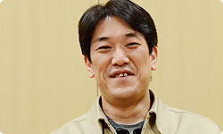
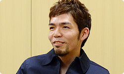

<div class="l-category-local-header">
<div class="category-local-header">
<div class="category-local-heading"><span>社長が訊く</span>
<div class="category-local-sub">IWATA ASKS


<div class="l-soft-topic-path is-block">
<div class="l-soft-topic-path-inner">
<div class="soft-topic-path">
<ul class="topic-path"><li class="topic-path-item"><span>『Wii U』 New スーパーマリオブラザーズ U篇</span></li></ul>


<div id="page-container">
<header class="interviewheader">
<h2 class="interviewheader__ttl"><span class="subtext">社長が訊く</span>『Wii U』</h2>

</header>
<div class="tabmenu-container">
<p class="tabmenu__ttl">シリーズ一覧
<ul class="tabmenu__body tabnum12">
<li class="tabmenu__item tab1">本体 篇</li>
<li class="tabmenu__item tab2">Wii U GamePad 篇</li>
<li class="tabmenu__item tab3">Miiverse プロデュース 篇</li>
<li class="tabmenu__item tab4">Miiverse 開発スタッフ 篇</li>
<li class="tabmenu__item tab5">インターネットブラウザー 篇</li>
<li class="tabmenu__item tab6">Wii U Chat 篇</li>
<li class="tabmenu__item tab7">New スーパーマリオブラザーズ U 篇</li>
<li class="tabmenu__item tab8">ZombiU（ゾンビU） 篇</li>
<li class="tabmenu__item tab9">Nintendo×JOYSOUND Wii カラオケ U 篇</li>
<li class="tabmenu__item tab10">Nintendo Land 篇</li>
<li class="tabmenu__item tab11">Nintendo TVii 篇</li>
<li class="tabmenu__item tab12">Wii Street U powered by Google 篇</li>
</ul>

<div class="hero-container">
<div class="hero__img">

<div class="interviewsubheader">
<div class="interviewsubheader__ttl"><h2>New スーパーマリオブラザーズ U篇</h2>

<div class="pageindex-container">
<p class="pageindex__ttl">目次
<ul class="pageindex__body">
<li class="pageindex__item">1. 「何を新しくするの？」</li>
<li class="pageindex__item">2. 「もったいない」</li>
<li class="pageindex__item">3. “ノーバディプレイ”</li>
<li class="pageindex__item">4. マップをひとつに</li>
<li class="pageindex__item">5. 手元で投稿を読む</li>
<li class="pageindex__item active">6. 「いろんなものをタッチしてほしい」</li>
</ul>

<div class="interview-container">
<h3 class="interview__ttl">6. 「いろんなものをタッチしてほしい」</h3>

岩田
: 今回は４人同時プレイ、<br>バディも含めると、最大５人までが<br>同時に楽しめるようになりましたけど、<br>シリーズでは史上はじめて、<br>Miiで遊べるようになりましたよね。


竹本
: じつは前回のWii版でやっていたときも、<br>試しにMiiを動かしたことがあったんです。<br>でも、服の色でしか見分けがつかなくて・・・。


足助
: そのときの僕と竹本さんのMii、<br>どっちが自分なのかわからなかったんです。


岩田
: こんなに違う顔なのにですか？


一同
: （笑）


竹本
: でも今回は、ＨＤ（※14）になったWii Uで試してみたら、<br>画面が広がったときに<br>Miiのキャラがけっこうちっちゃくなっても、<br>表情の違いまでわかるようになりました。

※14ＨＤ＝High Definition（ハイデフィニション）の略。テレビなどにおける高解像度（高精細、高画質）のこと。映像のピクセル数が多く、７２０本以上の走査線数を保持し、かつアスペクト比が１６：９であることが条件。高解像度の映像を扱う地上波デジタル、ＢＳデジタルなどのテレビジョン放送をＨＤＴＶと呼ぶ。


足助
: ＨＤになったおかげで、<br>マリオがまばたきしていることまで<br>はっきりわかりますしね。


岩田
: Wiiのときから、マリオはまばたきしていたそうですね。<br>ほとんどの方が、気づくこともなかったみたいですが。


竹本
: ただ、ストーリーモードでMiiを出してしまうと、<br>マリオの動きをしているのに、<br>マリオを遊んでいる気がしないんです。


岩田
: 『マリオ』のゲームではなくなってしまうんですね。


竹本
: そうなんです。<br>そこで、ストーリーモードでは<br>いつものマリオたちでプレイすることにして、<br>Miiでプレイするときは<br>「With Mii Mode」という分類にして、<br>「おだいモード」と「ブーストモード」と<br>「コインバトル」の３つのモードで<br>遊べるようにしました。


岩田
: 「主役がマリオであることは変えない」<br>ということですね。<br>やっぱり、マルチプレイをMiiで遊ぶと、<br>けっこう盛り上がるんでしょうね。


足助
: そうですね。<br>ファイアボールが自分に当たると、<br>「痛っ！」とか思わず声が出たりしますし。


岩田
: ああ、Miiは“自分の分身”<br>という思いが強くなるんですね。


竹本
: はい。それに、前作のときは<br>「ルイージは誰だっけ？」みたいに<br>頭のなかが混乱することがありましたけど、<br>今回は明らかに足助さんのMiiですから、<br>「足助さんだけには勝たさへん」<br>みたいなことも起こります（笑）。


一同
: （笑）


竹本
: 本当に人と遊んでいる感じが<br>今回はとくに出せたように思いますね。


岩田
: ところで・・・手塚さん？


手塚
: あ、はい？


岩田
: 今日はオブザーバーとして<br>手塚さんにも同席していただいているのですが、<br>手塚さんがやりたかったことは、<br>今回、できた気がしますか？


手塚
: えーと、そうですね。<br>「幅広い人たちに楽しんでいただけるゲームになった」<br>という手ごたえを強く感じています。<br>それにマルチプレイも、Wii版のときとは<br>「違う楽しみかたができるんじゃないか」と思います。<br>多人数で遊ぶときは、<br>ふつう「声が出る」ものですけど、<br>今回は「声をかけ合う」ことが必須になるんです。


岩田
: 「声が出る」のと「声をかけ合う」のとでは、<br>似ているようで、ぜんぜん違いますよね。


手塚
: 「マルチプレイがより楽しくなった」と思います。


岩田
: わかりました。<br>では最後に、お客さんへの<br>オススメのメッセージをお願いします。


足助
: 今回はマップがつながったことで、<br>大きい地図をいつでも歩いて<br>行き来することができるようになりましたけど、<br>そのマップ上では、ちびヨッシーを仲間にしたり、<br>アイテムを手に入れることができたり、<br>敵がいて、歩くのをジャマしてきたりと、<br>マップを歩くだけでも<br>いろんな発見があると思います。


岩田
: ただ移動するじゃなくて、<br>マップも遊びになっているんですね。


足助
: はい。さらに『Miiverse』のコメントを読みながら<br>遊ぶこともできますので、<br>ぜひ「マップを楽しんでほしい」と思っています。




岩本
: 僕は今回、『マリオ』の開発にかかわるのは、<br>『スーパーマリオ６４』（※15）以来なんです。<br>ですから『マリオ』というゲームのメインは<br>「ストーリーモード」と思っていたんですけど、<br>今回、それ以外のモードがすごく充実していますので、<br>「それぞれの楽しみかたを見つけてほしい」、<br>そう思っています。





※15『スーパーマリオ６４』＝１９９６年６月に、NINTENDO64と同時に発売された、マリオ初の３Ｄアクションゲーム。


岩田
: いろんな人が楽しめる<br>「“遊び場”を用意できました」<br>ということなんですね。


岩本
: そうですね。


手塚
: それから、今回は「追加コース」も考えていますし。


岩田
: 3DSの『Newマリオ2』と同じような<br>「追加コース」のことですね。


手塚
: そうです。<br>でも、今回は『Newマリオ2』とはまた違ったかたちで<br>みなさんに遊んでいただけるようにしようと思っています。<br>ただ・・・まだ何もつくってないんですけど（笑）。


岩田
: はい、事前につくったものをあとから配信するんじゃなくて、<br>これから決めるんですよね。


手塚
: はい。コースを追加できる仕組みはすでに組み込んでいるので、<br>どのような内容になるのかは、これからのお楽しみということで・・・。


岩田
: はい、わかりました。<br>では、竹本さん。


竹本
: 僕は今回、たくさんの人たちに苦労をかけながらも、<br>自分の入れたかったことを実現できたことに<br>とても満足しています。<br>とくに「バディプレイ」のモードは、<br>ゲームに苦手意識のある人でも<br>楽しめるようにつくったつもりです。


岩田
: Wii U GamePadだと、<br>複雑なボタン操作は不要で、<br>タッチするだけで楽しめますからね。


竹本
: はい。なので、いろんなものに<br>タッチして遊んでほしいです。


岩田
: ブロックが置けるだけじゃないんですよね。


竹本
: そうです。<br>タッチすると動いている仕掛けが止まったり、<br>パックンフラワーが引っ込んだり、<br>ノコノコがポコッとひっくり返ったりしますので、<br>いろんなものをタッチすることで<br>その反応を楽しんでほしいですね。




岩田
: 言葉が理解できないような<br>小さなお子さんも、今回は楽しめますね。


竹本
: はい、大丈夫です（笑）。


岩田
: わたしは、今日のお話を訊いていて、<br>「いろんな要素のピースが、ピッタリときれいにハマって、<br>　しかも、ボリュームたっぷりのゲームになった」<br>という印象なんですが、<br>手塚さん、これは計算どおりなんですか？


手塚
: そうです、バッチリです。


一同
: （笑）


岩田
: ただ、「計算どおり」とは言っても、<br>最初に計算して、思ったように実現するときと、<br>じつはそこまで計算をしていたわけじゃないけれど、<br>そこに何かがある気がして、<br>結果として実現する場合がありますよね。<br>いわば宮本さんが言うところの<br>“デカの勘”みたいな。


手塚
: あ、だったら、後者ですね。


一同
: （笑）


岩田
: そもそも手塚さんにとっても、<br>『Newマリオ2』と『NewマリオU』の<br>２作の『マリオ』を同時につくるのは<br>はじめての体験でしたから。


手塚
: はい、そうですね。


岩田
: ピークもけっこう重なっていましたしね。


手塚
: でも、そこはうまくバランスをとりながら<br>対応するようにしていました。<br>Wii U版に重点を置いているときは<br>3DS版のほうは少しお休みして、<br>ある程度落ち着いたら、もう一方を見て、<br>みたいなことを繰り返していましたので、<br>ものすごく大変ではなかったです。<br>ただ、長丁場でしたね・・・。


足助
: やっぱり手塚さんがいちばん大変でしたよね。


岩本
: そう思います。<br>でも、そんな状況にありながらも、<br>手塚さんは疲れたような表情を一切せずに、<br>いつもニコニコと、楽しそうに<br>仕事をされていたんです。<br>そういうことも、ゲームの中身に乗り移って<br>お客さんに伝わりますから、大切なことですよね。


手塚
: あ、ほめられちゃいました（笑）。


岩本
: その姿を見て<br>「さすがだなー」と思いましたから。


手塚
: ふふふ（笑）。


岩田
: みなさん、本当に長い間、お疲れさまでした。<br>ありがとうございました。


一同
: ありがとうございました。


<li class="pagination-prev"><span>5. 手元で投稿を読む</span></li>
<li class="pagination-next"><span>→ ZombiU（ゾンビU） 篇</span></li>
</ul>
<div class="listbtn-container">
<p class="listbtn__item">社長が訊く 一覧

